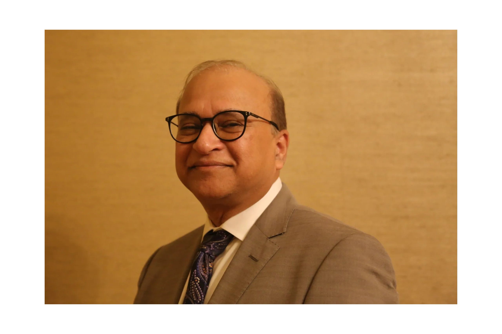

About Us
Ai Enabled, Patient Centric Digital Health Network
Ingenio Care is an Ai powered Digital health company. We are building a patient centric healthcare network in which providers seamlessly collaborate to delivery high quality care, efficiently while increasing their income meaningfully. The network plans to achieve that by using Ai enabled solution to orchestrate care efficiently and effectively delivered though provider collaboration. Key areas of our focus include:
- Patient Access that is instant by leveraging unused provider capacity
- Ai Enabled Physican Assistant for Patient Notes and Coding
- Ai Enabled Physician Assistant for Care Planning and orchestration
- Ai Enabled Prior Authorization Solution
- Ai Enabled Post Discharge Robot
"Although our healthcare system is complex and everchanging, we believe that it is possible to simplify it through innovative operating models, Use of Artificial Intelligence and use of advanced analytics techniques.
We will love to partner with you create the futuristic Healthcare Network."

Alex Kumar, Founder and CEO
Mr. Kumar is a highly accomplished innovator and entrepreneur with a strong focus on healthcare. He possesses extensive expertise in healthcare models, business strategy, data sciences, and software technologies. He has a proven track record of delivering disruptive healthcare solutions through conceptualizing new ideas and leveraging proficient agile software development methodologies.
Throughout his career, Mr. Kumar has provided strategic guidance to early-stage companies and developed an analytics/AI-driven healthcare delivery model to tackle cost and quality issues that plagued the US healthcare system. As a founding member of two startups, he has led operations and technology innovation, both of which are now publicly traded with a market capitalization exceeding $2 billion.
Moreover, as the leader of the Investment for Growth (IFG) initiative at R1RCM, Mr. Kumar developed a cost/quality offering that included an economic model, operating model, and an end-to-end technology platform with a commitment to reducing healthcare costs by 25% while enhancing the quality of care. This offering was the first of its kind in the industry.
As the Chief Strategy and Technology Officer of R1RCM, Mr. Kumar designed and developed a groundbreaking end-to-end revenue cycle platform that delivered significant yield and revenue improvement for healthcare providers. This platform was the first of its kind in the healthcare industry.
Before his entrepreneurial pursuits, Mr. Kumar worked for Accenture and PWC after graduating from the Indian Institute of Management, Ahmedabad.